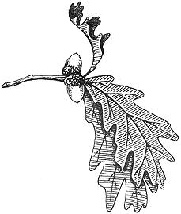
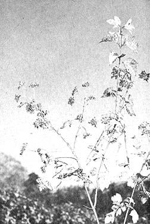
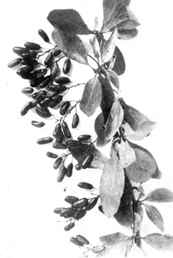
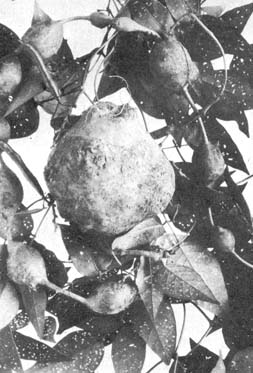
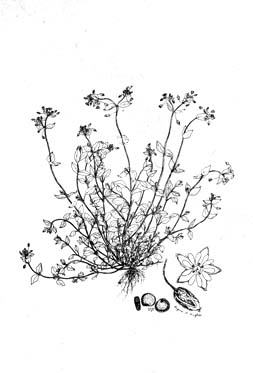

November-a time that can be as mild as October or as savage as January in the Midwest-is here again. During the early part of the month we'll bustle around, basket in hand, looking for any food plants that are left. Later I'll clean my trusty rifle and see about harvesting a deer for the protein we'll need during the upcoming winter.
Some of the plants we'll forage in November are high bush-cranberry (Viburnum trilobum), barberry (Berberis vulgaris), groundnut (Apios americana) and chickweed (Stellaria media). Considerable evidence indicates that all four of these wildings were not only mixed by Indians into their meat and fruit but were also used to form a good survival or trail food called pemmican . . . I'll get to that a little later.
Highbush-cranberry-a red fruit similar to its domestic counterpart-grows on a two to ten-foot-high shrub. During the summer the bush has leaves that are roughly shaped like those of the maple with three wide and rather pointed lobes rounded to a broadly pointed shape at the base. The leaf margins have coarse and wavy teeth while the stalks of the leaves are grooved and often have a bud where the leaf stem joins the main stalk. High bush-cranberry leaves fall long before the fruit and, in early November, the shrub looks like a twiggy plant with gray or brown bark festooned with bright red berries. Those berries are sweet and each contains a small to medium flat seed.
High bush-cranberries grow all the way across the North American Continent down to and including northern Ohio, northern Illinois, northeast Iowa, southwest South Dakota, southeast Wyoming and Washington. Many of the bushmen in Alaska and northern Canada still lay in a supply of the tasty fruit every year to use as a complement to moose roasts and wild waterfowl dishes.
Here in Wisconsin we're blessed with a variety of cranberries but we still pick and process a good supply of our favorite, the highbush. We like that one because it can be used to make a pet food of mine which I designed as camping fare . . . my own version of pemmican.
High bush-cranberries are at their best for making pemmican when the leaves fall from the plant and the fruit has been touched by two or three frosts. We pick our berries without crushing or breaking their skins and carefully dry them in either the oven (at a very low temperature as we don't want to cook them) or out in the sunlight. Sometimes we even dry the fruit in the oven for about two hours and then place the berries on a piece of paper to finish drying in some corner of the room or in the attic.
The other major ingredient of pemmican is venison, rabbit, beef, pork or any one of a number of other meats or cuts of meat. The very best cut of all for this dish, however, is made from the tough lower portion of either the rear or front legs of a deer.
I find it easiest to handle a leg of venison if I leave the meat in its natural muscle shape and trim it-as a unit-away from the bone. When I have the muscle separated I cut away the tough membrane surrounding it, discard this covering and use a very shapr knife to slice the meat into slabs about 1/4 to 3/8 inch thick.
Next I stir sea salt into four quarts of water-a handful at a time-until the crystals will no longer dissolve. I then place the salt water on the stove, bring it to a boil and add about two tablespoons of red pepper. Then, using a long-handled fork, I dip the venison-a slice at a time-into the bubbling water and let it boil for at least three minutes. At the end of this time I hold the meat above the pan to drip for a few seconds before placing each slice on absorbent paper or cloth to drain and dry.
When all the slices have been boiled in salt water I put them on a tray and place the whole thing in the oven. Then I turn the fire to a moderate temperature and leave the slices there until they're quite hard. This curing can also be done very quickly under direct sunlight, as long as you're careful to protect the meat from pesky insects.
Now, when the cranberries (remember the cranberries?) are very dry and ready for use they're ground together with the dried venison in the proportion of one part meat to three parts berries. I then melt about two tablespoons of new lard for each pint of meat, pour the hot fat over the mixture and stir very well. I next add about 1/4 teaspoonful sage and stir that in also. Then I place the concoction in plastic bags-about a cupful to a bag-and freeze it. When I want to go on the trail or just crave something a little different from the usual run of things I thaw out one of these bags and eat heartily.
I sometimes preserve this trail treat with smoke when I don't want to freeze it. The wire shelves of the smoke box described in MOTHER NO. 8 (I'm still using it) will hold a good supply of pemmican and, for the smoking, I build a fire of hickory wood and smother it with slightly damp hickory shavings.
This curing can be very cool and slow and about three days of alternately building up the fire and letting it die produces the best job. I place the pemmican in clean, white cloth bags and stir it around from time to time to evenly expose all sides to the smoke. After three days of more or less continuous processing, I remove the meat from the smoke box and store it away in the same bags.
We also use high bush-cranberries in other traditional dishes: cranberry relish, cranberry spice tea and cranberry pot roast.
Cranberry relish is very simple to make and it'll positively delight the taste buds of any homesteader who's serving a good roast mallard or a haunch of venison.
Pick and wash one quart of high bush-cranberries. Grind the fruit very well and then add a whole orange-peel and all-and grind it into the cranberries. Add one cup brown or raw sugar. Stir the ingredients and place them in a refrigerator to ripen two or three days before using. Serve the relish with meat, fowl or corn bread.
Cranberry spice tea is fine to serve on cold, rainy days when both body and spirit need a lift. Start by boiling about one pint of highbush-cranberries in one pint of water until the berries pop. Strain out the juice with a jelly bag and add enough water to once again bring the mixture up to two pints. (Of course if you have a juicer this can be done by juicing a pint of berries and adding about a pint of water.)
Set the liquid aside and mix together 1/4 teaspoon each of nutmeg, cinnamon and allspice. Grind two tablespoons of dried mint leaves and tie all the ingredients into a white cloth bag. Bring 2-1/2 cups of water to a boil, pour into a teapot and add the cheesecloth tea bag. Cover and let steep for five minutes.
Pour the tea and the two pints of cranberry juice into a large saucepan. Add 3/4 cup sugar and 2-1/2 cups of sumac juice (made by crushing staghorn or scarlet sumac drupes in cold water . . . MOTHER NO. 7). Stir together very well. Reheat (but do not boil) and serve hot or pour over ice cubes to make a chilled drink . . . either way tastes mighty good with cranberry nut bread.
Cranberry nut bread is made by first combining one cup of whole grain wheat flour with one cup unbleached white flour. Sift one cup of brown sugar, 1-1/2 teaspoons double-acting baking powder, 1/2 teaspoon soda and one teaspoon salt into the flour. Cut in 1/2 cup shortening and one egg. Carefully fold in one cup of chopped hickory nuts and one cup of chopped high bush-cranberries. Spoon into a 9 X 5 X 3 greased pan and bake in a 350-degree oven for about one hour. Remove from pan, cool and let set overnight for slicing.
Cranberry pot roast is a good solid dish that'll brighten the day-especially a "company" day like Thanksgiving-for everybody that eats it. The meat can be deer, moose, bear or even beef. Bone a four-pound roast by making a deep slash from the outside of the center of a piece of rump roast to the bone. Cut around and remove the bone. Roll the roast into a compact chunk and tie it with stout cord, then sprinkle flour on a flat surface-such as a bread board-and roll the meat in it. Salt and pepper very well.
Add two tablespoons shortening to a Dutch oven or large frypan, place on the fire and heat to the sputtering stage. Then turn the roast in the Dutch oven until it's well browned on all sides. Reduce the heat and let the meat simmer uncovered while you make a batter of two sliced medium onions, 1/2 cup water and one pint of high bush-cranberry sauce. Pour the mix ture over the roast, cover the pan and let it simmer for 2-1/2 or more hours or until the meat is tender. If the gravy turns out to be a little thin, thicken it with browned flour.
The two common varieties of barberry- Berberis canadensis and Berberis vulgaris -are similar leaf-losing shrubs which grow to a height of three to six feet. They have thorns on their dark brown branches. The leaves of the plants are alternate or in lateral clusters . . . broadest at the center, wedge-shaped at the base and smoothly pointed at the tip. When we look for the barberry in November, though, the leaves will be gone and the shrub will probably be thickly covered with football-shaped berries which hang in clusters from a common stem. Closer examination will reveal that the fruits hang almost straight down and the thorns form the sign of across.
The barberry is a sour fruit that can be used to make jelly (by adding a lot of sugar) or a drink.
We brew up a beautiful ruby red-colored jelly by heating the barberries until the juice flows. Then we place the fruit in a jelly bag and let it drip into a pan overnight. Next morning we add three times the amount of water as berry juice and proceed to add sugar equal to the total amount of the liquid. (White sugar makes the prettiest jelly but the raw sugar is the most healthful . . . take your choice.) Boil hard for one minute. Add one package of commercial pectin and bring to a boil again. Cool and pour into sterilized jelly jars. Cover with a lid or melted paraffin.
A much more healthful way to use the barberry might be in a sweet/sour drink. Extract a quart of juice by boiling two quarts of barberries until the skin pops and the pulp drips out in the jelly bag. Add water to make a gallon of liquid. Dissolve one teaspoon of cinnamon in one pint of liquid honey and add to the mixture. Stir well, cool and quaff. A good glass of this juice would probably go well with a dish of baked groundnuts.
The vine-like groundnut (Apios americana) is a close relative of the soybean that reaches for sunlight by climbing-sometimes several feet-onto other plants. Its leaves are divided into either five or seven lance-shaped leaflets which grow opposite each other on the stem. The terminus of the leaf branch is a single leaflet. A cluster of small purplish-brown flowers grow at the junction of the leaf stalk and the main stem. These flowers, in full bloom, give off such a heady perfume that they can often be located by just sniffing around a bit. (It has even been suggested that this fragrance could be used to produce a fast change in the social life of wallflower-type maidens.)
Another distinctive feature of the above-surface parts of the groundnut is the bean pods that look and taste like soybeans. I've boiled these-pod and all-and they're about as flavorful as any other bean, with perhaps more of a sweetish taste than some.
In November, about all that's left of the groundnut-that's still edible-are the potato-like tubers that grow on its roots. Folks who've read Thoreau will recall that Henry thought they were a "promise of nature to feed her children here at some later date". It does seem so when you turn over the soil in a remote place and are startled by a collection of knobby tubers that range from the size of a walnut up to that of a man's fist.
These root growths taste so much like turnips to me that if I were blindfolded I don't think I could tell the difference. They're prepared by first digging and scrubbing them very well. (This can be simplified by soaking the beasties overnight and then attacking them with a scrub brush the next morning.)
Once cleaned, they can be eaten in a variety of ways including baked, boiled and mashed.
Baked groundnut starts with boiling-for about 30 minutes-and peeling the tubers. They're then coated with butter, placed in a stone dish and baked for an additional 30 minutes. We eat 'em hot as a side dish with trout or baked woodchuck.
Boiled groundnuts are made by covering the unpeeled tubers with salted water and boiling them till they're tender enough to be speared by a fork. We eat 'em with melted butter or, if we have it, sour cream.
One interesting sidelight to groundnuts is that they reportedly can be boiled, peeled, strung on strings and dried in the attic or some other dry place until they become as hard as stones. In this condition they'll withstand aging, freezing or extreme heat and will still be edible if soaked in water for two days or ground in a food grinder into a sort of potato flour.
Groundnuts can also be boiled, sliced and fried in bacon grease like Irish potatoes . . . the groundnuts are tougher but more tasty.
All this tuber eating is fine, but for a change of pace I like to have a dish of greens once in a while . . . especially since they're so hard to find after Jack Frost has visited a few times. One plant, though, that'll provide November greens is the chick weed (Stellaria media).
Now good old chickweed is a very common plant found almost everywhere that grass grows and it's so rich in iron and other goodies that it is sometimes listed as an herbal. That fact coupled with its good flavor and availability snakes it a very useful wild food.
Chickweed has a very thin, weak-looking main stalk that usually doesn't hold its rows of tiny opposing pairs of leaves up to the sun. These leaves are about 3/4 of an inch long, about half as wide and are egg-shaped with a point on the outer end. The flowers are small white stars that open only on sunny days. In fact, an interesting point about chickweed is that on cloudy or cool, dark days or at night the plant goes to "sleep" and curls its hardiest mature leaves over tender developing leaflets and flower buds . . . thus protecting them from the elements.
The chickweed's "sleep" is what allows it to be one of the first plants out in the spring, one of the last to die in the fall and one of the few to stay alive and growing under a layer of mulch right into the winter.
We use oak leaves for covering our patch of chickweed for the expedient reason that we have more of this than any other mulching material. Straw or hay would work just as well, though (maybe better). We spread the leaves, about six inches deep, on the chickweed after a few frosts but before the ground freezes. On top of this we lay down tar paper, plastic, boards or anything handy that'll compact the leaves and keep them from blowing away.
About once a month after the snow flies we rake back the covering and pick a mess of chickweed greens. The important thing to remember here is not to leave the mulch off too long and not to remove the covering at all on very cold days. If you can keep the ground from freezing, chickweed will live and produce greens all winter long. I would imagine if this wild vegetable were given any chance at all of keeping warm-for instance, if it were planted in a cold frame with manure underneath and a good covering over the top-the chickweed would grow and produce an abundance of greens all winter. I'll have to try that next year.
|
 Highbush-cranberry |
 Barberry |
 Groundnut |
|
 Chickweed |
 |
|